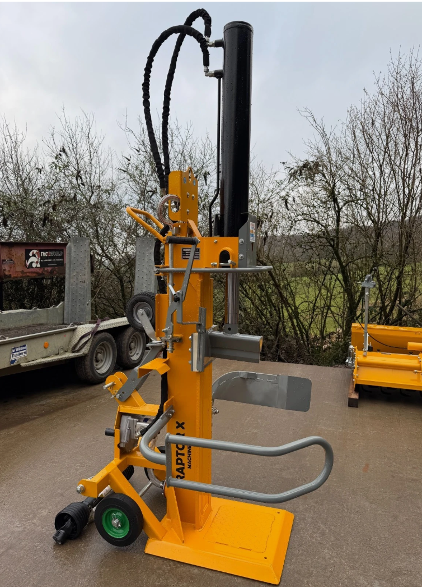

DRAFT
RAPTORX
Heavy Plant · Forestry Implements
Doc No. RX-30T-OM-001
Rev. A · Issued 05/2026
Language: EN-GB

Fig. 01 · As-builtRaptor X 30T · Vertical Log Splitter
Operator Safety Briefing & Instruction Manual
30-Tonne Vertical Splitter.
PTO-driven heavy-duty vertical splitter with self-contained gear
pump and oil tank, manual log lift arm, and transport wheels. Splits
logs up to 110 cm. Read this manual end-to-end before connecting
the implement to any tractor.
⚠ Danger — Read Before Use
This machine is capable of causing crush, amputation, entanglement
and high-pressure fluid-injection injuries. Operation by untrained
persons, children, or any person under the influence of drugs,
alcohol or fatigue is strictly prohibited.
Keep this manual with the machine at all times.
Replace if damaged or illegible.
DRAFT
RAPTORX · 30T Vertical Splitter
RX-30T-OM-001 · Rev A
Section 00 — How to read this manual
Contents & signal-word conventions.
01 — Orientation
01Cover & Document Identity01
02Contents & Signal Words02
03Machine Specification03
04Component Identification04
02 — Safety
05Decals & Hazard Symbols05
06Personal Protective Equipment06
07General Safety Rules07
08PTO & Shaft Entanglement08
09Hydraulic & Injection Hazards09
10Work Area & Operating Zones10
03 — Setup & Operation
11Pre-Start Inspection11
12Hitching & PTO Connection12
13Operating Procedure13
14Log Lift & Log Handling14
15Shutdown & Disconnection15
04 — After Use
16Transport & Towing16
17Maintenance Schedule17
18Hydraulic System Service18
19Troubleshooting19
05 — Records
20Daily Pre-Start Checklist20
21Operator Sign-Off21
22Tear-Off Quick Reference22
Signal words used in this manual
Hazard alerts follow the ANSI Z535.6 / ISO 3864 colour and structure convention. Read every signal word and the message that follows before acting.
▲ ANSIDanger
Indicates a hazardous situation which, if not avoided, will result in death or serious injury. Reserved for the most extreme conditions.
▲ ANSIWarning
Indicates a hazardous situation which, if not avoided, could result in death or serious injury.
▲ ANSICaution
Indicates a hazardous situation which, if not avoided, could result in minor or moderate injury.
i NOTICENotice
Indicates information considered important but not directly related to a personal-injury hazard (e.g. machine damage, contamination).
DRAFT
RAPTORX · 30T Vertical Splitter
RX-30T-OM-001 · Rev A · § 03
Section 03 — Specification
Technical data & intended use.
The Raptor X 30T is a vertical-orientation, three-point-hitch-mounted log
splitter intended for the production of domestic and small-commercial
firewood from previously felled and de-limbed timber. It is not
designed for stationary industrial milling, for materials other than wood,
or for use as a hydraulic press for any other purpose.
Splitting system
| Splitting force (max.) | 30 t |
|---|
| Operating orientation | Vertical |
|---|
| Max. log length | 1100 mm (110 cm) |
|---|
| Wedge height | approx. 250 mm |
|---|
| Cylinder bore × stroke | 130 × 1100 mm |
|---|
| Cycle time (fwd / ret) | ≈ 9.5 s / 5.5 s |
|---|
| Working pressure | ≤ 250 bar |
|---|
Drive & hydraulics
| Drive type | Tractor PTO, 540 rpm |
|---|
| Min. tractor power | 35 hp (26 kW) |
|---|
| Pump type | Two-stage gear pump (on-board) |
|---|
| Reservoir capacity | approx. 30 L |
|---|
| Hydraulic oil grade | HLP 46 (ISO VG 46) |
|---|
| Control valve | Two-hand, auto-detent return |
|---|
Mounting & transport
| Hitch standard | 3-point linkage, CAT 1 pins |
|---|
| CAT 2 conversion | Available (bush kit) |
|---|
| PTO shaft | Supplied new, 6-spline 1⅜″ |
|---|
| Transport wheels | Fitted, off-tractor moves only |
|---|
| Operating mass | approx. 370 kg |
|---|
| Footprint (W × D × H) | 900 × 1100 × 2350 mm |
|---|
Environmental & rating
| Operating temp. range | −5 °C to +40 °C |
|---|
| Noise (LpA, at operator) | < 85 dB(A) typ. |
|---|
| Designed to | EN 609-1 principles |
|---|
| Permitted operators | One (1) trained adult |
|---|
i NOTICENotice
Cycle times assume nominal PTO speed (540 rpm) and an oil temperature
between 30 °C and 60 °C. Cold oil slows the cycle; allow a 5-minute
warm-up cycle below 10 °C ambient before splitting under full load.
Intended use — and prohibited use
Intended:
- Splitting clean, de-limbed firewood logs up to 110 cm long.
- Dry or green softwood and hardwood within the rated force.
- One operator, on level ground, with the tractor handbrake set.
Prohibited:
- Splitting frozen logs, root-balls or stumps with embedded soil/metal.
- Use as a hydraulic press, jack or pulling device.
- Operation by more than one person, or while another person is within 5 m.
- Operation on slopes > 5° or on icy / muddy / loose ground.
DRAFT
RAPTORX · 30T Vertical Splitter
RX-30T-OM-001 · Rev A · § 04
Section 04 — Component identification
Know your machine.
Before operating, locate each numbered component on the physical machine. If any guard, decal or component listed below is missing, damaged or illegible, do not operate the splitter until it is replaced or restored.
01Hydraulic ram cylinder
02Hydraulic hose loops
033-pt hitch top mount
04Splitting wedge
05Two-hand control levers
06Manual log lift arm
07Splash guard / shield
08Splitting bed / base plate
09Transport wheel
10PTO shaft input
01 — Hydraulic ram cylinder
Heavy-wall double-acting cylinder. Full force through the entire 1100 mm stroke. Keep the rod film-oiled; never paint, scratch or strike it.
02 — Hydraulic hose loops
High-pressure hoses feeding the cylinder from the valve. Inspect for chafing, kinks, blisters or seepage at every pre-start (see § 09).
03 — 3-pt hitch top mount
Top-link attachment point at the top of the mast. Use the tractor's top link to set the beam plumb (vertical) before operating.
04 — Splitting wedge
Hardened steel cleaver, ~250 mm tall. Inspect for cracks, rolled edges or embedded fragments weekly.
05 — Two-hand control levers
Both hands must remain on the levers throughout each stroke. Releasing either lever stops the ram and returns the wedge to the upper limit.
06 — Manual log lift arm
Hinged hand-operated arm with cradle. Roll a heavy round onto the cradle, then lever the arm up to tip the log onto the splitting bed. No hydraulic assist (see § 14).
07 — Splash guard / shield
Sheet-steel shield around the splitting envelope. Deflects bark, splinters and chips away from the operator. Must remain bolted in place.
08 — Splitting bed / base plate
Heavy steel base plate on which the log sits. Keep the surface clear of bark, off-cuts and stones — anything trapped here will deflect the split.
09 — Transport wheel
For yard movement only. Not road-legal. Never tow the splitter behind a vehicle on its transport wheel(s) at any speed.
10 — PTO shaft input
1⅜″ × 6-spline input flange driving the on-board gear pump. Use only the new PTO shaft supplied — it is length-matched to this implement.
— Gear pump & oil tank (internal)
Two-stage gear pump and ~30 L hydraulic reservoir, housed within the yellow column. Sight gauge and filler cap accessed from the side panel.
— Safety decals
Located adjacent to each hazard (see § 05). Replace any decal that is missing, faded or unreadable before continuing to operate.
DRAFT
RAPTORX · 30T Vertical Splitter
RX-30T-OM-001 · Rev A · § 05
Section 05 — Decals & hazard symbols
What the labels on the machine mean.
Each decal carries a single message. Learn them before operating. Replace any decal that is missing, faded, scratched off, painted over or otherwise unreadable — operating without intact decals is prohibited.
DRAFT
RAPTORX · 30T Vertical Splitter
RX-30T-OM-001 · Rev A · § 06
Section 06 — Personal protective equipment
Required PPE — every shift, no exceptions.
The operator must wear all of the items below from the moment the tractor is started until the PTO is fully disengaged and the engine is off.
01
Eye protection
Side-shielded safety glasses to EN 166-F minimum. Full-face visor preferred when splitting old or knotty timber.
02
Hearing protection
Ear defenders or plugs rated ≥ SNR 25 / 25 dB. Required for continuous use as PTO noise readily exceeds 85 dB(A).
03
Steel-toe boots
EN ISO 20345 S3 or equivalent. Falling rounds and split halves frequently land near the foot well.
04
Tight-fitting gloves
No loose cuffs, no draw-strings. Cut-resistant grade. Remove gloves entirely before approaching the PTO shaft for any reason.
05
Close-fitting clothing
No loose sleeves, scarves, hoodies with strings, jewellery or watches. Long hair must be tied back and under a hat.
06
Head protection
EN 397 helmet when splitting overhead-stored rounds or when working in proximity to other tree work.
Items that must NOT be worn
- Rings, bracelets, necklaces, watches, lanyards.
- Loose hi-vis vests with open back panels.
- Scarves, neckerchiefs or untucked shirts.
- Gloves with elasticated or flared cuffs near the PTO.
- Frayed work clothing — change before starting.
- Tie-strings, lanyards on ear defenders that hang loose.
- Tool belts with hanging tools when near the PTO shaft.
- Open-toe footwear or wellingtons without steel toecaps.
▲Warning
Entanglement is the single most common cause of fatal injury on PTO-driven implements. Most fatalities involve loose clothing, hair or a glove cuff. Once contact is made with a 540 rpm shaft, the operator cannot pull free.
DRAFT
RAPTORX · 30T Vertical Splitter
RX-30T-OM-001 · Rev A · § 07
Section 07 — General safety rules
The non-negotiables.
▲Danger
One operator only. A second person never assists with loading, steadying or releasing a stuck log while the PTO is turning. Disengage the PTO and stop the tractor engine before any second person enters the work area.
Operator readiness
- The operator is over 18, trained on this specific machine, and physically capable of lifting and turning logs of the size to be split.
- The operator is not fatigued, ill, or under the influence of alcohol, prescription sedatives or recreational drugs.
- The operator has read this manual in full and can demonstrate the location of every control without searching.
- A second responsible adult is within shouting distance — not in the work area — in case of emergency.
- A charged mobile phone is on the operator's person, not in a bag in the cab.
- A basic first-aid kit and an eye-wash bottle are within 10 m of the splitter.
Work area
- Level, dry, firm ground. No slope greater than 5°.
- Daylight or equivalent task lighting; no shadows over the wedge.
- No bystanders, children, pets or livestock within 5 m.
- Splitting area cleared of stones, off-cuts and previous split halves.
- Outdoors only — never operate in an enclosed space (tractor exhaust contains carbon monoxide).
- Tractor handbrake fully applied; wheels chocked if on any incline.
- Tractor in neutral, gearbox in park where fitted, PTO disengaged before mounting / dismounting.
- Fire extinguisher (≥ 2 kg dry-powder or CO₂) within reach.
Conduct during splitting
- Hands never enter the working envelope of the wedge. Reposition the log only with the ram fully retracted and the control released.
- Fingers away from any crack that opens in the log as it splits. A crack that opens under the wedge can close again the instant the wood gives — it will pinch or amputate fingers without warning.
- Never reach across or over the beam while the ram is moving.
- Never strike, hammer or use a bar to free a stuck log while the ram is under load — release pressure first.
- One log at a time. Never split two logs stacked together.
- Do not leave the splitter unattended with the PTO running, even for a moment.
- Do not adjust any pressure-relief or directional valve. Factory settings are for the safe operating envelope.
- If anything sounds, smells or feels wrong — stop. Disengage PTO. Investigate with the tractor engine off.
▲Caution
Hydraulic oil reaches working temperatures of 60 °C and above in normal use. Do not touch hoses, fittings or the cylinder body bare-handed after extended operation.
DRAFT
RAPTORX · 30T Vertical Splitter
RX-30T-OM-001 · Rev A · § 08
Section 08 — PTO shaft & entanglement
The 540 rpm rule.
A PTO shaft turning at 540 rpm rotates nine times every second. In the time it takes you to recognise that a sleeve has touched the shaft, more than half a metre of clothing has already been wound on. There is no version of this where you pull free.
▲Danger
Never approach a rotating PTO shaft for any reason. Disengage the PTO, stop the tractor engine, remove the key, and wait for all rotation to stop completely before crossing within reach of the shaft.
Before connecting the PTO shaft
- Confirm the tractor PTO is 540 rpm and that the stub is a 1⅜″ 6-spline. Do not use 1000 rpm PTOs on this machine.
- Inspect the supplied PTO shaft end-to-end. Both guard tubes must rotate freely on their bearings. Both restraint chains must be present and uncut.
- Confirm the integral shear-bolt / over-run clutch is fitted at the implement end (orange-banded yoke). This protects against shock loads when a log binds.
- Measure shaft length at the tractor's minimum and maximum 3-pt heights. The shaft must never bottom-out under any geometry; nor must engagement length drop below ⅓ of the inner tube at maximum stretch.
- Grease both U-joints, the centre slide, and both guard bearings before first use and every 8 hours of operation thereafter.
During use
- Both guard chains must be anchored — one to the tractor, one to the splitter. The chains stop the guard tubes spinning with the shaft.
- The maximum permissible U-joint angle is 25°. If your hitched angle exceeds this, raise or lower the implement; do not run at high angles — it shortens shaft life and increases entanglement risk through vibration.
- Do not step over a rotating shaft. Walk around the tractor instead.
- Listen for unusual knocking or vibration; both indicate misalignment or wear and require immediate shutdown.
When disconnecting
- Disengage PTO at the tractor.
- Shut off the tractor engine and remove the ignition key.
- Wait at least 30 seconds for all rotation to cease and residual hydraulic pressure to bleed.
- Disconnect the shaft at the tractor end first, then the implement end. Support the shaft on the cradle provided — never let it drop onto the drawbar.
▲Warning
If a guard tube is missing, broken, melted, or fails to rotate freely on its bearings, the implement is unsafe to operate. Replace before any further use. Do not improvise with tape, cable ties or wire.
DRAFT
RAPTORX · 30T Vertical Splitter
RX-30T-OM-001 · Rev A · § 09
Section 09 — Hydraulic safety & injection injury
What "250 bar" really means for your skin.
The splitter's hydraulic system reaches working pressures of around 250 bar
(≈ 3,600 psi). A pin-hole leak at that pressure produces an invisible jet
of oil that will pass through clothing, skin and tendons without you feeling
more than a brief sting. The injury looks trivial and is catastrophic.
▲Danger
Hydraulic fluid injection is a surgical emergency. If oil enters skin — even through a tiny pin-hole and even if the entry wound is barely visible — go directly to A&E. Tell the clinician it is a high-pressure oil injection injury. Time to debridement governs whether the limb is saved.
Leak-checking — the cardboard rule
Never check for leaks with your hand, your finger, or by feeling along a hose. Use a piece of stiff cardboard, held with both hands kept well clear, and pass it slowly along the suspect run. Stop the system and depressurise before doing this.
- Look for oil spray staining the cardboard rather than drips.
- Look for damp patches, glossy weeping along seam joints, or oil mist around fittings.
- A whistling or hissing sound near a hose is a high-pressure leak — stop immediately.
Before opening any fitting
- Disengage the PTO.
- Stop the tractor engine and remove the key.
- With the engine off, work the control lever back and forth several times to bleed any trapped pressure to the reservoir.
- Wait two minutes for any residual cylinder pressure to settle.
- Loosen fittings slowly, with a rag, away from your face.
▲Warning
Never remove the hydraulic tank filler cap with the system pressurised or running. The reservoir can hold hot oil under residual pressure — opening it during operation will spray hot oil across the operator. Shut down, wait five minutes, then vent.
Things you must not adjust
- The main pressure-relief valve. Factory-set; resealable only by an authorised service technician.
- The two-stage pump's transfer pressure setting.
- The auto-return detent travel on the control valve.
Increasing pressure beyond design will not split harder logs — it will burst a hose, fail a fitting or fracture the cylinder weld. Logs that won't split at 30 t need cross-cutting first.
DRAFT
RAPTORX · 30T Vertical Splitter
RX-30T-OM-001 · Rev A · § 10
Section 10 — Work area & operating zones
Where the operator stands. Where nobody else stands.
SPLITTER
& OPERATOR
ACrush zone — 1 m
BOperator only · 2 m
CReception · 3 m
DBystander limit · 5 m
The diagram above shows a four-zone "onion" around the splitter. While
the PTO is engaged, only the trained operator may stand within zones A
and B. A reception zone (C) is where split firewood may be carried to a
stacking spot. Beyond zone D, bystanders, helpers and any animal must
remain at all times.
Zone A — Crush envelope (1 m)
Volume swept by the ram and wedge. Hands and arms never enter zone A while the control valve is energised. Reposition logs only with the ram retracted to its limit-stop and the lever centred.
Zone B — Operator station (2 m)
The operator's working stance. Two-hand controls are reachable only from this station. Keep this zone clear of loose off-cuts that could roll under your feet.
Zone C — Reception (3 m)
Where split halves naturally fall and are collected. Walk around — never reach across the beam — to retrieve wood from this zone. Best practice: split, retract, then collect.
Zone D — Bystander limit (5 m)
No person other than the operator may cross zone D while the PTO is running. If someone needs to approach, disengage PTO, idle the tractor down, and make eye contact before they cross.
iNotice
When working in poor visibility (dusk, light rain, snow flurry) double
zone D to 10 m and add a hi-vis cone or marker at the perimeter.
DRAFT
RAPTORX · 30T Vertical Splitter
RX-30T-OM-001 · Rev A · § 11
Section 11 — Pre-start inspection
Walk-around before every session.
Carry out this inspection with the splitter unhitched or with the tractor engine off. Allow no fewer than three minutes. If any item fails, correct it before continuing — do not "make-do".
Structure
- Frame, beam and wedge free of cracks, deformation or weld failures.
- All bolts and nuts present and torqued; no missing fasteners.
- Guards in place over PTO input flange and pump coupling.
- All decals legible — replace any that aren't.
Hydraulics
- Ram fully retracted (wedge at upper limit-stop) before reading the oil level — if the ram is extended, oil sits in the cylinder and the gauge reads low.
- Oil checked cold, on level ground, for a consistent reading.
- Sight gauge reads between MIN and MAX — roughly ¾ up the glass.
- Filler cap breather hole clear; if a separate bleed screw is fitted on top of the tank, loosen ¼-turn before operation so the tank can breathe.
- No oil stains, drips or weeping at hoses, fittings, valve, cylinder.
- Hoses free of chafing, bulges, cracks or kinks.
- Control levers return to centre under spring; two-hand engage tested.
- Cylinder rod clean and lightly oiled — no rust, no nicks, no embedded grit.
Wedge & beam
- Wedge edge sound — no chips deeper than 3 mm.
- Beam slide-way clean and lightly greased.
- Stroke limiter free to slide and lock.
PTO shaft
- Both guard tubes rotate freely on bearings.
- Both restraint chains present, sound, and long enough to attach.
- U-joints free, no excessive play, no missing grease nipples.
- Shear-bolt clutch (orange band) intact at implement end.
Log lift arm
- Pivot pin and R-clip in place; no cracks at the weld.
- Arm swings freely through its full travel — no binding or sticking.
- Cradle locks in upright rest position to serve as second guard rail.
Wheels & hitch
- Transport wheels inflated; tyres free of cuts and rim corrosion.
- CAT 1 pins present, retained by lynch-pins or R-clips.
- Top-link mount free of cracks; correct top-link supplied by tractor end.
Site & weather
- Ground level, dry, firm. Slope < 5°.
- No standing water under the splitter.
- Visibility adequate.
▲Caution
A single missing R-clip on a CAT 1 pin can let the splitter walk off the lift arms under vibration. Carry spare R-clips and lynch-pins in the tractor cab.
DRAFT
RAPTORX · 30T Vertical Splitter
RX-30T-OM-001 · Rev A · § 12
Section 12 — Hitching & PTO connection
Connecting the splitter to the tractor.
▲Warning
Hitching is the moment most struck-by and crush injuries occur. Work alone, slowly, and with the tractor's PTO disengaged. Never stand between the tractor and a moving splitter.
-
Position the tractor
Reverse the tractor squarely up to the splitter so the lift arms line up
with the CAT 1 lower pins. Stop with at least 200 mm clearance,
apply handbrake, knock gear into neutral, disengage PTO, then shut off
the engine and remove the key before dismounting.
-
Fit lower link arms
Lift each lower arm onto its CAT 1 pin in turn. Insert lynch-pin or
R-clip and confirm it is fully home. Adjust check-chains/stabilisers so
the splitter cannot swing more than 25 mm side-to-side.
-
Fit the top link
Connect the tractor's top link to the splitter's mast. Adjust length
so the beam stands plumb (vertical) when the lift arms are at a normal
working height — typically 150–250 mm above ground.
-
Fit the supplied PTO shaft
With both ends of the shaft cleaned of debris, fit the shear-bolt /
orange-banded end to the implement input first, then the plain yoke
to the tractor stub. Confirm both quick-release collars / push-pin
locks have clicked home — pull on each yoke to verify.
-
Anchor the guard chains
Hook one restraint chain to a solid point on the tractor (not a moving
part) and the other to the splitter mast. Chains should be just slack
enough to allow full articulation but not loose enough to flop into the
shaft.
-
First-engage check
With the area clear, start the tractor, raise idle to ~1000 rpm,
engage the PTO briefly (≤ 3 s) and listen. No knocking, no vibration,
no leaks. Disengage. Inspect for any signs of stress at hoses or pump
coupling.
DRAFT
RAPTORX · 30T Vertical Splitter
RX-30T-OM-001 · Rev A · § 13
Section 13 — Operating procedure
Splitting a log — the standard cycle.
-
Bring tractor to 540 rpm PTO speed
With PTO disengaged, set engine speed to the marked 540 rpm position
on the tractor's tachometer (typically green-banded). Engage PTO at
low engine rpm to limit shock on the shaft, then bring engine speed to
the working setting.
-
Confirm operator stance & zone clearance
Take up position at the two-hand control valve, facing the beam. Both
feet on solid ground, shoulder-width apart. Confirm Zone D (5 m)
is clear of people and pets before each log.
-
Load the log onto the bed
Stand the log on the base plate with its flat, square-cut end down, leaning lightly against the column. A wonky or angled cut face will tip or kick the log out under load.
Position the log so the wedge will come down through the centre, splitting along the grain — from top to bottom, never across it. For logs under ~25 kg, place directly on the bed. For anything heavier, use the manual log lift arm (see § 14). One log at a time — never stack two logs to split together.
-
Initiate split — two-hand control (ZHB)
With both hands on the control levers, push both levers down together. The wedge descends onto the log. Maintain pressure on both levers throughout each stroke — releasing either one stops the ram instantly and the spring-loaded valve returns to neutral.
The European-standard two-hand control (ZHB) exists for one reason: both your hands are occupied by the levers, so neither hand can be near the wedge while it is moving. Never tie down, weight or otherwise defeat a lever.
-
Complete the split
Allow the wedge to travel fully through the log. The two halves will
fall to either side of the wedge — do not attempt to catch them. If
the wedge stalls, release both controls, retract fully, rotate the log
90° and try a different grain angle.
-
Retract — hands-free auto-return
To return the wedge, push both levers fully up into the detent. The valve locks in the retract position and the ram travels back to the upper limit-stop without operator input. The detent kicks out automatically when the ram reaches the top — you do not need to hold the levers during retraction.
-
Reset for next log
Wait for the ram to reach its rest position before approaching the bed. Clear split halves into the reception zone before loading the next log — never reach across the beam while another half could still be balanced on the bed.
▲Warning
Never try to "force" a stubborn log. Holding the control under stall builds heat and stress in the hydraulics. After 5 s of no progress, release, retract, rotate the log, and try again. Knotty or stringy hardwood may need to be cross-cut shorter.
DRAFT
RAPTORX · 30T Vertical Splitter
RX-30T-OM-001 · Rev A · § 14
Section 14 — Log lift arm & log handling
Roll. Don't lift. Save your back.
The manual log lift arm exists so the operator never has to deadlift a heavy
round onto the bed. For anything above 25 kg, use of the lift arm is
mandatory. When stowed upright against the beam, the arm locks in place
and acts as a secondary guard rail along the operator's working side.
Log lift arm — loading sequence
-
Lower the arm to the ground
With the splitter PTO disengaged, swing the lift arm down so the cradle sits flat on the ground beside the splitting bed. Verify there is no gap between cradle and bed that a log could roll into.
-
Roll the log onto the cradle
Stand to the side — never directly in line with a rolling log. Use a peavey or cant-hook if the log is over 60 cm in diameter. The log must rest with its centre of gravity over the cradle, not overhanging either end.
-
Lever the arm up to bed height
Grip the handle with both hands, brace your legs (not your back), and lever the arm up in one smooth motion. The cradle tips the log onto the splitting bed. Do not jerk — a snatched lift can tip the log past the bed and onto your feet.
-
Park the arm clear of the wedge
Lower the arm back to its ground rest before initiating the split — the wedge must never contact the cradle. Alternatively, lock the arm in its upright stowed position so it acts as a side guard.
Choosing logs
- Cross-cut to length first. Logs over 110 cm will not fit and will jam the ram.
- Cut both ends as square as practical. Skewed faces let the log walk under the wedge.
- Reject logs with embedded metal (fence wire, old spikes). One impact will destroy the wedge.
- Frozen logs may shatter under load — leave to thaw before splitting.
- Old, dry knot-heavy hardwoods may exceed 30 t requirement. Cross-cut shorter before re-attempting.
Stuck logs & over-runs
If a log binds on the wedge so that the ram cannot retract:
- Release both controls. The detent should return the ram.
- If the ram does not retract, switch the valve to manual return and ease back slowly.
- If the log is still stuck on the wedge, disengage PTO, shut down the tractor, then work the log free with a sledge from the side — never from in front of the wedge.
- Inspect the wedge after any binding event for cracks before resuming.
▲Caution
Never use the log lift arm as a step or a place to set tools. The arm pivots freely and will swing under you. Lift with your legs, not your back — for any log you cannot comfortably lever, cross-cut it shorter first.
DRAFT
RAPTORX · 30T Vertical Splitter
RX-30T-OM-001 · Rev A · § 15
Section 15 — Shutdown & disconnection
How to leave the machine safely.
-
Retract the ram fully
Bring the wedge back to its upper limit-stop. Cylinder retracted reduces seal exposure to weather and prevents accidental contact with the wedge edge.
-
Park the log lift arm
Lower the arm to its ground rest, or lock it in the upright stowed position. Do not leave the arm hanging mid-travel — it can swing and strike the operator on the next approach.
-
Disengage PTO
Drop tractor revs to idle, then disengage PTO. Allow the PTO shaft to coast to a stop visually before approaching.
-
Shut down the tractor
Apply parking brake, place gear lever in park / neutral, switch off and remove the key. Keep the key on your person — not in the cab.
-
Bleed residual pressure
With the engine off, cycle the control lever back and forth several times to bleed trapped hydraulic pressure.
-
Disconnect the PTO shaft
Release the tractor end first, then the implement end. Place the shaft on the cradle / hook provided. Do not let it drop.
-
Inspect & clean
Walk around the splitter. Look for leaks. Brush off bark and chips from the beam, wedge and pump area. Wipe the cylinder rod clean with a soft cloth to keep grit out of the seals. If a tank bleed screw was loosened before use, retighten it now before transport or storage. Verify the filler cap is finger-tight.
iNotice
If the splitter will be left hitched to the tractor between shifts, also chock the tractor's drive wheels and leave the wedge fully retracted. If unhitched, lower the splitter onto its parking feet on firm ground — do not rest the weight on the transport wheels alone.
DRAFT
RAPTORX · 30T Vertical Splitter
RX-30T-OM-001 · Rev A · § 16
Section 16 — Transport & movement
Three ways to move the splitter. One way is on the road.
① Hitched to the tractor
For yard, field and short on-property moves. PTO shaft disconnected and stowed; cylinder fully retracted; log lift arm locked in the upright stowed position; tractor lift arms set to a stable carry height (just enough to clear the ground).
- Walking pace on rough ground.
- Wide swing-out — the splitter projects rear-ward; allow extra room for gates.
- Do not lift the splitter beyond the height the tractor can carry without lifting its own front wheels.
② On the transport wheels
For short, low-speed moves around the yard by hand or with a small mover only. The wheels are not towing wheels — they exist so one person can roll the machine clear of a workspace.
▲Danger
The transport wheels are not road-legal and have no braked towing rating. Never tow this splitter behind any vehicle on public or private roads.
③ Loaded onto a trailer
For inter-site travel. Use a flat-bed trailer rated for ≥ 500 kg; secure with at least four ratchet straps to anchor points on the base frame — not on hoses, the cylinder, or the PTO input flange.
- Cylinder fully retracted; lift cradle locked up.
- PTO shaft removed and stowed separately.
- Wedge area blocked with timber so the beam cannot shift.
Loading / unloading from a trailer
- Load on level ground only. Use ramps rated ≥ 750 kg, with non-slip surface, secured to the trailer.
- Approach in a straight line. Never reverse a hitched splitter up a ramp.
- When pushing or rolling on transport wheels, push from the lift mast — not from a hose or guard.
- Strap the splitter immediately. Do not move the tractor away while the splitter is on the trailer but unstrapped.
▲Warning
The splitter's centre of mass sits high — the vertical beam dominates the weight distribution. Take corners slowly when hitched, and always re-check strap tension after the first 5 km on a trailer.
DRAFT
RAPTORX · 30T Vertical Splitter
RX-30T-OM-001 · Rev A · § 17
Section 17 — Maintenance schedule
Keep it running. Keep it safe.
| Interval | Task | Notes |
|---|
| Before each use |
Full pre-start walk-around (§ 11). |
Sign off on the daily checklist (§ 20). |
| After each use |
Brush off bark & chips. Wipe cylinder rod clean. Retract ram, lock lift arm. |
Wipe wedge with light oil if storing outdoors. |
| Every 8 hours |
Grease PTO U-joints, slide profile, guard bearings. |
Use lithium-complex EP2 grease. 2–3 strokes per nipple. |
| Every 8 hours |
Grease cylinder pins, lift-arm pivot, valve linkages. |
Wipe excess to prevent dirt accumulation. |
| Every 40 hours |
Check all bolts to torque. Inspect hoses for chafing. |
Pay special attention to pump-coupling bolts. |
| Every 50 hours |
Replace hydraulic return-line filter element. |
OEM element only. Record date on filter housing. |
| Every 100 hours |
Inspect wedge edge; dress or replace as required. |
Hard-facing should be done by a qualified welder only. |
| Every 100 hours / annually |
Drain & replace hydraulic oil. Clean reservoir interior. |
Approx. 30 L AW-46 / HLP 46. Replace breather and suction strainer. |
| Every 500 hours |
Workshop service: pump output, cylinder seals, PTO shaft. |
By qualified hydraulic technician only. |
| Before winter storage |
Full grease-down; cover cylinder rod; bleed pressure. |
Store indoors if possible; if outdoors, fully covered. |
iNotice
All intervals are whichever comes first — hours of operation or calendar time. Record completed services in the maintenance log at the back of this manual.
DRAFT
RAPTORX · 30T Vertical Splitter
RX-30T-OM-001 · Rev A · § 18
Section 18 — Hydraulic system service
Oil, filters, and the rules of thumb.
Oil specification
| Grade | ISO VG 46 anti-wear
(HLP 46 / AW-46) |
|---|
| Cold-climate alternative | ISO VG 32 / AW-32 |
|---|
| Viscosity @ 40 °C | 46 cSt (32 cSt for AW-32) |
|---|
| Anti-wear additive | Required — Zn-based, > 350 mg/kg |
|---|
| Pour point | ≤ −24 °C |
|---|
| Reservoir capacity | ≈ 30 L |
|---|
| Cold start range | −10 °C to +5 °C: cycle slowly for 5 min |
|---|
For UK use, AW-46 / HLP 46 is the recommended
all-round grade — it works through temperate and warm conditions and
is the most widely stocked from agricultural and engineering oil
suppliers (Granville, Millers, Morris's, Comma, Carlube and similar).
AW-32 is a thinner grade suitable only for sub-zero winter operation.
Never mix grades — drain and refill if changing.
Oil change — procedure
- Operate splitter under no load for 5 min to warm the oil to ≈ 40 °C.
- Shut down per § 15. Wait 10 min for any pressure to bleed.
- Place a 35 L drain pan under the reservoir.
- Remove the magnetic drain plug. Capture and inspect debris on the magnet — heavy ferrous material indicates pump wear; consult a service technician.
- Clean reservoir interior with a lint-free rag. Do not use solvents.
- Replace suction strainer and return filter elements.
- Refill via the filler cap until the sight gauge reads between MIN and MAX, cold.
- Re-start, cycle ram fully ten times to bleed air, recheck level.
Symptoms of hydraulic trouble
- Foaming oil in sight gauge: air ingress on the suction side, low oil, or wrong-grade oil.
- Slow or weak ram: low oil, worn pump, dirty filter, leaking cylinder seal, or pressure-relief stuck open.
- Whining pump: air entrainment or cavitation — stop and check oil level immediately.
- Hot reservoir (> 70 °C): excessive sustained relief-valve operation (forcing stuck logs), or low oil. Stop and let cool.
- Jerky ram movement: air in the cylinder; cycle ten times to bleed.
- Visible oil mist around a hose: stop immediately. Pin-hole leak — see § 09.
▲Danger
Never weld, drill, grind or flame-cut on the cylinder, reservoir or any pressurised component. Trapped vapour and oil residue ignite. Repairs to pressurised components are workshop work only.
Disposal
Used hydraulic oil is a controlled waste. Drain into sealed containers and dispose of through a licensed waste oil collector. Do not pour onto ground, into drains, or burn in an open fire. Capture and recycle used filter elements in the same way.
DRAFT
RAPTORX · 30T Vertical Splitter
RX-30T-OM-001 · Rev A · § 19
Section 19 — Troubleshooting
If something isn't right.
Always disengage PTO and stop the tractor engine before investigating. The table below covers the common faults — anything not listed, or any fault you cannot resolve in one step, calls a service technician.
| Symptom | Likely cause | Action |
|---|
| Ram won't advance |
PTO not engaged; low oil; relief valve stuck open; control valve in neutral detent only. |
Re-engage PTO at low rpm. Check oil. Cycle control twice. If unresolved, call service. |
| Ram advances but won't split |
Knotty/cross-grained log, frozen wood, or under-spec PTO rpm. |
Retract, rotate log 90°, retry. Cross-cut shorter. Confirm tractor at 540 rpm. |
| Ram slow or weak |
Low PTO rpm; cold oil; clogged filter; worn pump. |
Raise rpm to 540. Allow 5-min warm-up. Check filter age. Service pump if persistent. |
| Pump whining or screaming |
Air on suction side, low oil, blocked strainer. |
Stop immediately. Check oil level. Inspect suction line and strainer. |
| Oil hot, foaming in gauge |
Wrong oil grade, low level, excessive relief-valve dumping under stalled load. |
Stop. Allow to cool. Confirm HLP 46. Stop forcing stuck logs — see § 14. |
| PTO shaft vibrates / knocks |
Excessive U-joint angle, worn cross, dry slide, mis-fitted yokes. |
Shut down. Inspect U-joints. Reduce articulation angle below 25°. |
| Hydraulic oil mist or seep |
Pin-hole leak, loose fitting, perished seal. |
Stop. Do not touch. See § 09. Cardboard-test only after depressurise. |
| Wedge chipped or rolled edge |
Embedded metal in log; foreign object; over-load. |
Cease use. Inspect for cracks. Re-dress or replace before resuming. |
| Lift arm hard to lever / binding |
Pivot dry; bent arm or worn bush; log overhanging cradle. |
Grease pivot. Inspect arm for distortion. Re-position log so its CoG sits over the cradle. |
| Tractor stalls under split |
Tractor under-powered for log size; PTO not at 540 rpm; clutch slipping. |
Cross-cut log shorter. Confirm rpm. Service tractor clutch if recurring. |
DRAFT
RAPTORX · 30T Vertical Splitter
RX-30T-OM-001 · Rev A · § 20
Section 20 — Daily pre-start checklist
Tick every box before the PTO turns.
Section A — Operator & site
Operator trained on this machine, rested, sober, fit to work.
Initial
PPE worn: eye, ear, steel-toe boots, close-fitting clothing, tight gloves.
Initial
Ground level, dry, firm; slope < 5°; zone D (5 m) clear.
Initial
First-aid kit, eye wash and mobile phone on site.
Initial
Fire extinguisher within reach; ignition sources removed.
Initial
Section B — Machine
Walk-around done — frame, beam, wedge, decals all sound.
Initial
Oil level between MIN/MAX cold; no leaks anywhere.
Initial
PTO shaft guards rotate freely; both restraint chains attached.
Initial
3-pt CAT 1 pins R-clipped; check-chains/stabilisers set.
Initial
Log lift arm swings freely; pivot pin retained; locks in upright position.
Initial
Control valve returns to centre under spring; two-hand engage tested.
Initial
Brief PTO test at low rpm — no knocking, no leaks, no vibration.
Initial
DRAFT
RAPTORX · 30T Vertical Splitter
RX-30T-OM-001 · Rev A · § 21
Section 21 — Operator briefing & sign-off
Authorisation to operate.
By signing below, the operator confirms that they have read this manual, received a practical briefing covering each section, and demonstrated competent operation of the controls under supervision before being authorised to operate the Raptor X 30T splitter unsupervised.
Topics covered during briefing
- Document conventions and signal words (§ 02).
- Specification, intended use and prohibited use (§ 03).
- Component identification on the physical machine (§ 04).
- Decals and what each one means (§ 05).
- PPE selection and fitting (§ 06).
- General safety and conduct (§ 07).
- PTO entanglement and the 540 rpm rule (§ 08).
- Hydraulic injection injury & emergency response (§ 09).
- Work zones A–D and bystander limit (§ 10).
- Pre-start, hitching, operating, lift arm, shutdown (§§ 11–15).
- Transport rules and what is not road-legal (§ 16).
- Maintenance schedule and oil change basics (§§ 17–18).
Operators authorised to use this machine
| Operator name | Date briefed | Briefed by | Signature |
|---|
| | | | |
| | | | |
| | | | |
| | | | |
| | | | |
Maintenance log
| Date | Hours | Work carried out | Performed by |
|---|
| | | | |
| | | | |
| | | | |
| | | | |
DRAFT
RAPTORX · 30T Vertical Splitter
RX-30T-OM-001 · Rev A · § 22
Section 22 — Tear-off quick reference
Keep this near the machine.
START-UP — IN ORDER
- PPE on. Site cleared. Zone D (5 m).
- Splitter hitched, R-clipped, PTO shaft fitted and chained.
- Cylinder retracted. Lift arm parked at ground rest.
- Tractor in neutral, handbrake on, engine started.
- Engine to 540 rpm PTO mark.
- Engage PTO at low rpm, then bring up engine speed.
- Both hands on the control. Begin splitting.
SHUTDOWN — IN ORDER
- Ram fully retracted. Lift arm down or locked upright.
- Engine to idle. Disengage PTO.
- Engine off. Key out. In your pocket.
- Cycle control to bleed pressure.
- Disconnect PTO shaft — tractor end first.
IF SOMETHING'S WRONG
- Oil mist or seep: stop. § 09. Cardboard-test only.
- PTO knocking / vibrating: stop. Reduce angle.
- Stuck log: release, retract, rotate 90°, retry. After 5 s of stall — stop, cross-cut shorter.
- Whining pump: stop. Check oil immediately.
- Hot reservoir: stop, cool down, check load profile.
NEVER
- Allow a second person to assist with loading while PTO turning.
- Reach across or over the beam while ram is moving.
- Check leaks by hand.
- Remove the filler cap while running.
- Tow on the transport wheels.
- Adjust the pressure-relief valve.
EMERGENCY — INJECTION INJURY
Go directly to A&E. Tell the clinician: "High-pressure
hydraulic oil injection injury." Take this manual. Time to
surgical debridement governs outcome.
Specification at a glance
| Force | 30 t |
|---|
| Max log | 110 cm |
|---|
| PTO | 540 rpm |
|---|
| Min tractor | 35 hp |
|---|
| Oil | HLP 46, 30 L |
|---|
| Hitch | CAT 1 |
|---|
Greasing — every 8 h
- PTO U-joints (×2)
- PTO slide profile
- Guard tube bearings (×2)
- Cylinder pins (×2)
- Lift-arm pivot
- Valve linkages
Document
DOC RX-30T-OM-001
REV A
DATE 05/2026
LANG EN-GB
NORM EN 609-1 principles
MODEL Raptor X 30T
SERIAL ____________